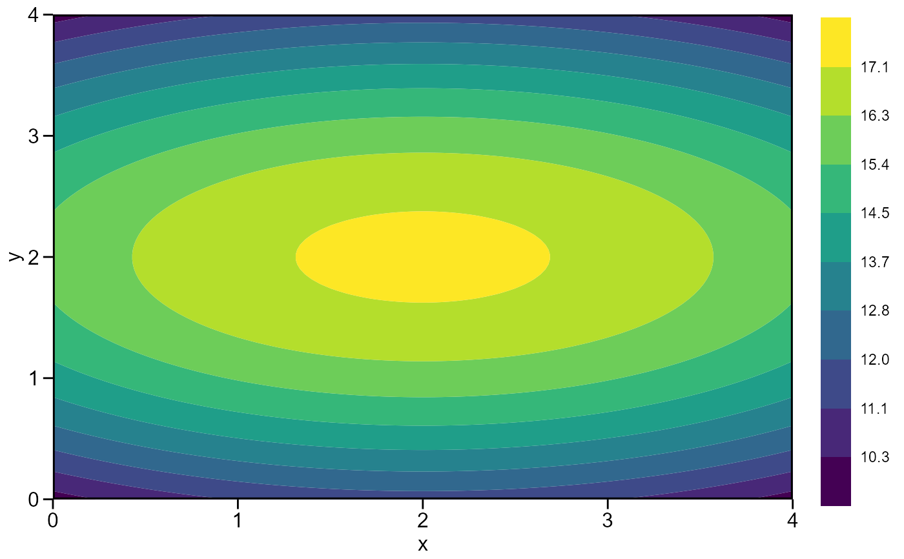

Plot the response surface model using a contour plot
Usage
# S3 method for resp_surf
plot(
x,
xlab = NULL,
ylab = NULL,
resolution = 100,
bins = 10,
plot_theme = theme_metan(),
...
)Arguments
- x
An object of class
resp_surf- xlab, ylab
The label for the x and y axis, respectively. Defaults to original variable names.
- resolution
The resolution of the contour plot. Defaults to 100. higher values produce high-resolution plots but may increase the computation time.
- bins
The number of bins shown in the plot. Defaults to
10.- plot_theme
The graphical theme of the plot. Default is
plot_theme = theme_metan(). For more details, seeggplot2::theme().- ...
Currently not used
Author
Tiago Olivoto tiagoolivoto@gmail.com
Examples
# \donttest{
library(metan)
# A small toy example
df <- data.frame(
expand.grid(x = seq(0, 4, by = 1),
y = seq(0, 4, by = 1)),
z = c(10, 11, 12, 11, 10,
14, 15, 16, 15, 14,
16, 17, 18, 17, 16,
14, 15, 16, 15, 14,
10, 11, 12, 11, 10)
)
mod <- resp_surf(df, x, y, resp = z)
#> -----------------------------------------------------------------
#> Anova table for the response surface model
#> -----------------------------------------------------------------
#> Analysis of Variance Table
#>
#> Response: z
#> Df Sum Sq Mean Sq F value Pr(>F)
#> x 1 0.000 0.000 0.00 1
#> y 1 0.000 0.000 0.00 1
#> I(x^2) 1 12.857 12.857 106.88 3.073e-09 ***
#> I(y^2) 1 142.857 142.857 1187.50 < 2.2e-16 ***
#> x:y 1 0.000 0.000 0.00 1
#> Residuals 19 2.286 0.120
#> ---
#> Signif. codes: 0 '***' 0.001 '**' 0.01 '*' 0.05 '.' 0.1 ' ' 1
#> -----------------------------------------------------------------
#> Model equation for response surface model
#> Y = B0 + B1*A + B2*D + B3*A^2 + B4*D^2 + B5*A*D
#> -----------------------------------------------------------------
#> Estimated parameters
#> B0: 9.8857143
#> B1: 1.7142857
#> B2: 5.7142857
#> B3: -0.4285714
#> B4: -1.4285714
#> B5: 0.0000000
#> -----------------------------------------------------------------
#> Matrix of parameters (A)
#> -----------------------------------------------------------------
#> -0.4285714 0.0000000
#> 0.0000000 -1.4285714
#> -----------------------------------------------------------------
#> Inverse of the matrix A (invA)
#> -2.3333333 0.0000000
#> 0.0000000 -0.7000000
#> -----------------------------------------------------------------
#> Vetor of parameters B1 e B2 (X)
#> -----------------------------------------------------------------
#> B1: 1.7142857
#> B2: 5.7142857
#> -----------------------------------------------------------------
#> Equation for the optimal points (A and D)
#> -----------------------------------------------------------------
#> -0.5*(invA*X)
#> Eigenvalue 1: -0.428571
#> Eigenvalue 2: -1.428571
#> Stacionary point is maximum!
#> -----------------------------------------------------------------
#> Stacionary point obtained with the following original units:
#> -----------------------------------------------------------------
#> Optimal dose (x): 2
#> Optimal dose (y): 2
#> Predicted: 17.3143
#> -----------------------------------------------------------------
#> Fitted model
#> -----------------------------------------------------------------
#> A = x
#> D = y
#> y = 9.88571+1.71429A+5.71429D+-0.42857A^2+-1.42857D^2+0A*D
#> -----------------------------------------------------------------
#> Shapiro-Wilk normality test
#> p-value: 0.04213785
#> WARNING: at 5% of significance, residuals can not be considered normal!
#> ------------------------------------------------------------------
plot(mod)

# }